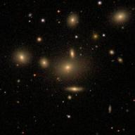
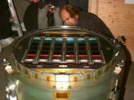
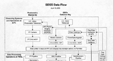

![[ galaxy distribution ]](sdssslice.jpg)
|
The Science of SDSS |
Apache Point Observatory |
Telescope Details
Tour the SDSS Site | Data Processing Challenges | FAQ |
|  |
|  |
|
| [Top] Galaxy cluster NGC 5919 as viewed by SDSS. [Middle] The SDSS camera for photometry — an array of CCDs with colored filters that can digitize a relatively large patch of sky each night. [Bottom] One major product of this research: a 3-D map of nearby galaxies. |
On a clear, dark night, light that has traveled through space for billions of years touches a mountaintop in southern New Mexico. At that moment, photons that left their source when algae were the only life on earth enter the Sloan Digital Sky Survey's sophisticated 2.5-meter telescope and yield the cargo of information they have carried across the universe. While they cease to exist as photons, the data within them live on as digital images recorded on magnetic tape, each image composed of myriad pixels (or picture elements), and each pixel capturing the brightness from each tiny point in the sky.
But the sky is not made of pixels. Stars and galaxies are real objects. The task of data management for the Sloan Digital Sky Survey (SDSS) is to take those electronically encoded pixels and turn them into real information about real things. Astronomers process this digitized data to produce information that they can use to identify and measure the properties of stars and galaxies. They must be able to find, distinguish and measure the brightness of celestial objects from the data, then collect these stars, galaxies and quasars into a catalog.
Computing experts liken the project to creating the Manhattan phone book, only for the heavens. Each star is like a person in the phone book, with an individual name and address. There is even a celestial Yellow Pages, a section of directory containing a smaller number of entries for which SDSS provides still more information in the form of spectra. For these objects, digitized data yield additional information about their velocity as they move away from the Earth, information from which to calculate how far away they are.
Information processing for SDSS begins with data acquisition. Photons from the stars hit the SDSS telescope's detectors and CCDs (very sensitive digital cameras) collect them. Charge "buckets" are then converted to digitized signals and written to tape on the mountain. The data travel from Apache Point to Fermilab via express courier. The tapes are delivered to Fermilab's Feynman Computing Center where the information on them is funneled into the various data processing pipelines: spectrographic data into the spectrographic pipeline; monitor data into the monitor pipeline; and imaging data into the astrometric, photometric, target selection and two other pipelines. Data "flow" into these software pipelines and information about the stars, galaxies and quasars flow out. That information is then put into the Operations Database, written at Fermilab and at the Naval Observatory, which collates the information to keep SDSS running.
|
 A flowchart of the data pipeline. Click on the image for a larger version. For more detailed information, visit the SkyServer page on SDSS data processing. |
The data processing pipelines are a collaborative effort led by Fermilab. Princeton University scientists built the photometric pipeline and University of Chicago experts created the spectroscopic pipeline. Fermilab's contributions include the monitor-telescope pipeline and the pipeline for selection of candidates for spectroscopy. Fermilab also coordinates the smooth operation of all the pipelines.
Eventually, experimenters will pass the information in the Operations Database "over the firewall" to the science database developed by scientists at Johns Hopkins University. This database operates as a query engine making the data readily usable by scientists on the project.
After imaging data is taken, objects of interest to SDSS scientists are tagged for follow-up. Coordinates for those objects are used to create "plug-plates". These plug plates are used to take simultaneous spectra of 600 targets all at once. Because astronomical objects set earlier each night, data processing operates quickly (within about a week) so that follow-up spectra can be taken before the object has set for the year.
Technology has governed the way we study the sky. Surveys conducted 50 years ago stored imaging data in the form of photographic plates, and catalogs in the form of printed books. Today, we store images in digitized form on magnetic tape or hard disks, and catalogs are digital databases. But whatever the age and with whatever technology, we still look up, and the sky is full of stars.
{kind=link}